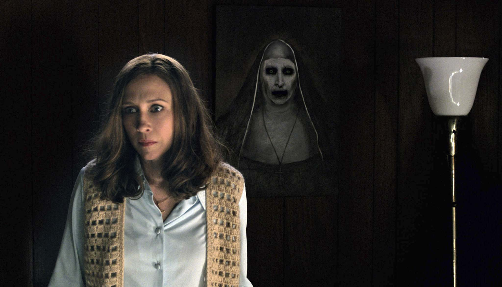

Conjuring
Story behind the movie

The true story behind “The Conjuring” is more terrifying than the movies themselves. The film is based on the experiences of Ed and Lorraine Warren, renowned paranormal investigators. In 1971, the Perron family moved into a farmhouse in Harrisville, Rhode Island. Strange occurrences plagued them: brooms vanished, unseen forces moved objects, and spirits roamed. The house had been in the same family for eight generations, with many mysterious deaths. The Warrens, who founded the New England Society for Psychic Research, were called in. Their chilling investigation forms the spine of the movie, revealing malevolent spirits and unexplained horrors.